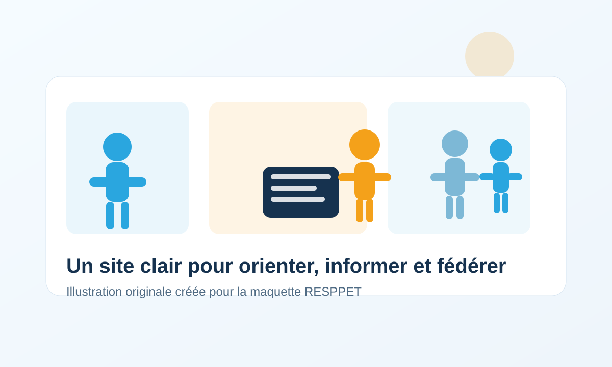

Le RESPPET fédère les acteurs engagés dans la santé mentale des étudiants et développe des actions de coordination, de prévention et d’orientation.

Présentation du réseau, bureau, gouvernance, charte, partenaires et rapports d’activité sont accessibles dans la rubrique « Le réseau ».
Coordination territoriale, groupes de travail, prévention en milieu universitaire et projets en cours sont détaillés dans la rubrique « Nos actions ».